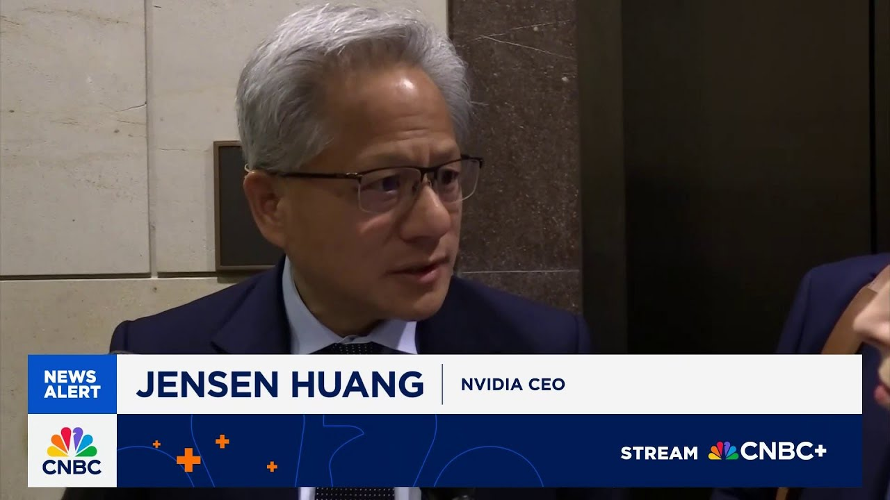

来B站一起耍【Global每日英语简报】
【黄仁勋：中国在人工智能发展上并未落后于美国】
Summary: Tech leaders and CEOs discussed AI competitiveness and tariffs with lawmakers, with Jensen Huang emphasizing China's strong AI capabilities and the need for supportive policies to maintain U.S. leadership in the global AI race.
摘要： 科技领袖和CEO们与立法者讨论了人工智能竞争力和关税问题，黄仁勋强调了中国强大的人工智能能力，并指出需要支持性政策以维持美国在全球人工智能竞赛中的领导地位。

⏱️ Estimated Reading Time: 8 min
Number of tech's biggest leaders and CEO was on the hill today.
多位科技界重要领袖和CEO今天出席了国会山会议。
Emily Wilkins caught up with Jensen Wong on his weigh in.
艾米丽·威尔金斯采访了黄仁勋，听取了他的看法。
Hey, Emily.
你好，艾米丽。
Hey, Carl.
你好，卡尔。
Well, yeah, a lot of CEOs on the hill today.
是的，今天有很多CEO在国会山。
A lot of lawmakers speaking with them about AI in the future, which is exactly what brought Jensen Huang here today as well to talk about how the US needs to remain competitive when it comes to AI.
许多立法者与他们讨论了人工智能的未来，这也正是黄仁勋今天来到这里的原因，他谈到了美国在人工智能领域保持竞争力的必要性。
I caught up with him for a few minutes and I asked him a little bit about how tariffs were impacting everything.
我与他简短交谈，询问了关税对各方面的影响。
There should always be policy that that enables us, supports and accelerate the ability for us to onshore manufacturing, but with willpower and and with the the resources of our country, I'm certain we can manufacture on shore.
应该制定政策，支持并加速我们本土制造的能力，凭借意志力和国家资源，我相信我们能够实现本土制造。
What's your reaction to the Wall Street Journal saying Huawei is advancing to catch up to your highest level chips?
你对《华尔街日报》称华为正在追赶你们最高水平芯片有何看法？
There's no question that Huawei is one of the most formidable technology companies in the world and they're incredible in computing.
毫无疑问，华为是全球最具实力的科技公司之一，他们在计算领域非常出色。
their incredible networking technology and software capabilities uh all of the essential uh capabilities to advance AI and they have they've made enormous progress in the last several years.
他们卓越的网络技术和软件能力是推动人工智能发展的关键，过去几年他们取得了巨大进步。
Uh whatever whatever policy uh the administr administration puts together really should enable us to accelerate uh the development of AI enable us to compete on a global global stage.
无论政府制定什么政策，都应加速人工智能发展，使我们在全球舞台上具备竞争力。
How far could I say one more like how far behind do you think China is?
我能否再问一句，你认为中国落后多少？
Uh, China is not behind.
中国并未落后。
I anybody ahead of you?
有人领先于你们吗？
I China is right behind us.
中国紧随我们之后。
I mean, they're we're very very close.
我是说，我们非常接近。
Uh, but remember this is a long-term this is an infinite race.
但记住，这是一场长期、无限的竞赛。
There's no, you know, in the in the world of life, there's no those, you know, there's no two-minute end of the quarter.
在现实世界中，没有所谓的季度末两分钟决胜。
There's there's no such thing.
不存在这种情况。
And so, we're going to compete for a long time.
因此，我们将长期竞争。
And just reme remember that this is this is a country with great will and they have great technical capabilities.
请记住，这是一个意志坚定且技术能力强大的国家。
50% of the world's AI researchers are Chinese and and so this is a uh this is an industry that that we will have to compete for.
全球50%的人工智能研究者是中国人，因此这是一个我们必须竞争的行业。
Huang will be visiting the White House later today to continue to talk about AI as well as tariffs.
黄仁勋今天晚些时候将访问白宫，继续讨论人工智能和关税问题。
Of course, the White House is currently put being putting together a plan for what their path forward with AI will look like, guys.
当然，白宫目前正在制定人工智能发展路径的计划。
Yeah, Emily, very interesting comments from Jensen Wong there.
是的，艾米丽，黄仁勋的评论非常有趣。
You know, echoing, I think, what any number of people who follow us closely have been uh saying lately in terms of China's abilities.
我认为这呼应了许多密切关注我们的人最近对中国能力的评价。
Um I would assume he's going to share the same um with the administration, with uh uh with um with Congress as well, in part because he's dealing with the possibility of sectoral tariffs that conceivably could hamper our ability in this country to continue to advance at the same pace.
我猜他也会向政府和国会传达同样的观点，部分原因是他在应对可能阻碍我国继续以相同速度发展的行业关税问题。
Exactly.
没错。
And and Wong, you know, he kind of spoke to me about the fact that he has invested and does want to invest in the US, but when it comes to AI, it's not just a matter of AI specifically.
黄仁勋向我提到，他已经在美投资并希望继续投资，但在人工智能领域，这不仅仅是人工智能本身的问题。
It's a much broader ecosystem that has to be able to support it from the skills to the energy to of course the tariffs and to be able to build these factories here in the US.
这是一个更广泛的生态系统，需要从技能、能源到关税等多方面支持，才能在美国建立这些工厂。
If Trump really wants to be able to onshore as he said he does, there is some questions about exactly what the outcome of his tariffs are going to be and whether you are going to be able to have that manufacturing return to the US in the way that he wants.
如果特朗普真的想实现本土化，那么他的关税政策将带来什么结果，以及制造业是否能如他所愿回归美国，还存在疑问。
I I guess I'm just wondering on the incentives if they're if they are aligned.
我想知道激励措施是否一致。
Nvidia I mean obviously Nvidia is a big US company and and wants the US to win but China remains an important market for Nvidia after we saw that big write down when the chips were banned.
英伟达显然是一家美国大公司，希望美国获胜，但在芯片禁令导致巨额减值后，中国仍是英伟达的重要市场。
Sarah, no, it's absolutely correct.
莎拉，没错。
I think there are a lot of questions as far as what the impact of tariffs are going to be and if the US is going to really be able to remain competitive.
我认为关于关税的影响以及美国是否能真正保持竞争力，存在许多问题。
There are certainly concerns among lawmakers who I speak with about the US's ability to remain ahead of China.
与我交谈的立法者确实对美国能否保持对中国的领先地位感到担忧。
As you heard him say, China is only right behind us.
正如他所言，中国紧随我们之后。
They have a lot of capabilities.
他们拥有许多能力。
Um, and I think you've seen a lot of changes right now in how the various administrations have approached AI.
我认为你现在已经看到各届政府在人工智能政策上的许多变化。
Biden had a plan that he put forward, but the Trump administration has basically reversed a lot of that.
拜登提出了计划，但特朗普政府基本上推翻了许多内容。
Uh we don't know exactly what's next or what it looks like.
我们不知道接下来会发生什么或会是什么样子。
And when I talk to folks in the AI industry, they say that that really needs to be there for the US to have a seat at the table and to continue to be a leader globally when it comes to AI standards and and what the policies and rules of the road are.
当我与人工智能行业的人交谈时，他们表示美国需要在人工智能标准和政策规则方面占有一席之地，才能继续成为全球领导者。
Yeah, we talk a lot about their lead in China in EVs.
是的，我们经常讨论中国在电动汽车领域的领先地位。
today.
今天。
Big note out of Morgan Stanley about their lead in robotics and humanoids.
摩根斯坦利发布了一份关于中国在机器人和人形机器人领域领先地位的重要报告。